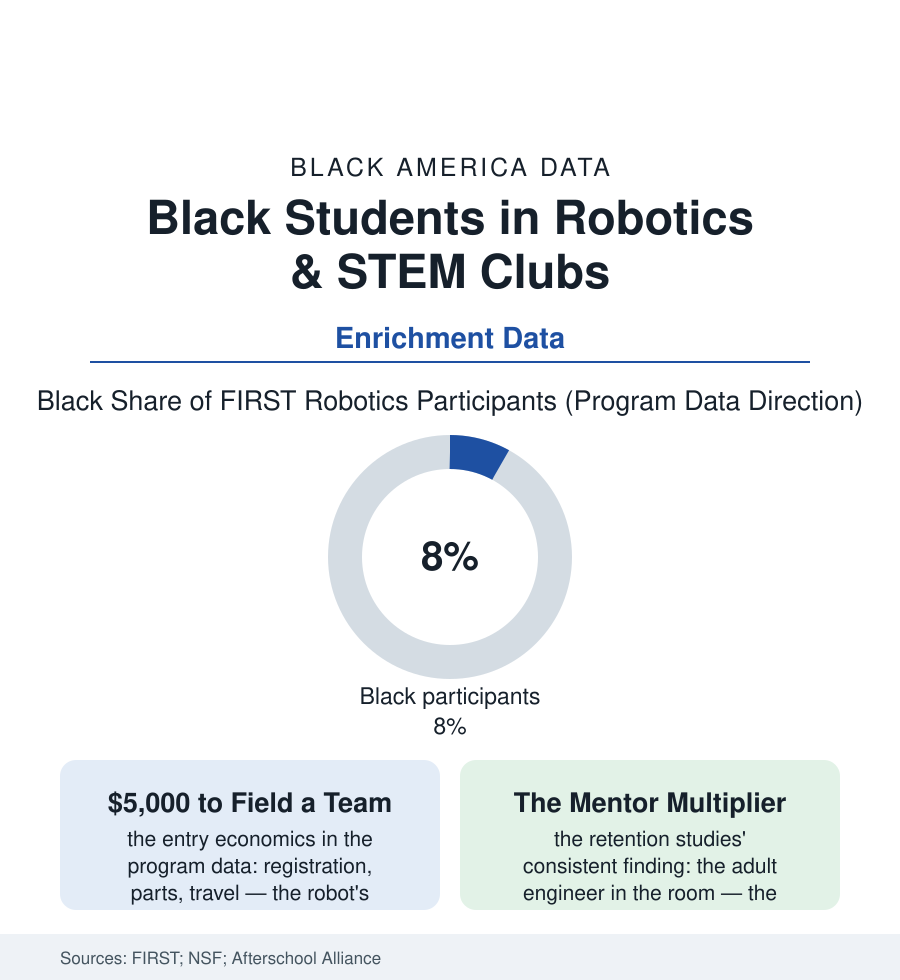

Black Education
The Robotics Team: After-School STEM in the Participation Data
The build season's robot is the STEM pipeline's most visible machine — and its team rosters reproduce the access map of every other file. The robotics file.

At the regional championship, the robot does what it was built to do or it does not, in front of everybody — which is why the robotics team became the emblem of the STEM pipeline's promise. Its participation data, though, tell the atlas's usual story in the pipeline's most photogenic room: the students building the machines are not yet the students of every file in this section. This article reads the robotics file.
The Price of a Build Season
The access arithmetic is the enrichment file's, mechanized: fielding a competitive high-school robotics team costs, in the program's own accounting, thousands of dollars a season before travel (the registration, the kit, the machined parts, the second robot the serious teams build to practice against), raised by the team's school and sponsors — the funding map thereby reproducing the district wealth map through a bake-sale-and-booster mechanism the funding file would recognize instantly. The participation counts follow the money in the program data: Black students in the high single digits of the flagship competition's rosters against their eighth of the school population and a far larger share of the students the pipeline rhetoric claims to target, the all-girls and rookie-team initiatives of the program's equity push registering in the recent seasons' team demographics as deliberate corrections. The sustaining constraint is human, and the mentor studies name it precisely: a team is a teacher-coach's thousand unpaid hours plus the industry mentors the professional file supplies — the Black engineer as robotics mentor being, in the workforce data, a professional stretched across every diversity initiative in her metro area simultaneously — the team's survival past its founding coach the participation data's cliff. The feeder structure compounds from the elementary file: the LEGO leagues and the coding clubs of the enrichment economy sorting the ten-year-olds whose parents can pay the registration and drive the Saturday, so that by the high-school build season the roster has been filtered by a decade of small prices nobody itemized as admissions decisions.
What the Robot Actually Teaches
The outcome data justify the emblem, with the self-sorting caveat the researchers print in the first footnote — the students who join are already the students likeliest to persist, and the honest reading credits the program with the trajectory it measurably steepens rather than the whole climb: the program's alumni studies find participants — Black alumni included in the program's own longitudinal tracking — declaring STEM majors and persisting in engineering at multiples of the comparison rates, their self-reported gains concentrated in exactly the capacities the classroom files struggle to build (the project that fails publicly and gets rebuilt by Friday, the documentation, the alliance negotiations of the competition's strange cooperative scoring — a curriculum of iteration no worksheet simulates). The HBCU and community shelf of the file is its counterweight and its future: the Black-led STEM nonprofits running teams out of churches and recreation centers on the barbershop file's civic infrastructure (the national organizations — the NSBE Jr. chapters, the Black Girls Code and its brothers' counterparts, the 100 Black Men's robotics leagues — fielding teams whose funding model is the community's own, their trophy shelves the enrichment file's proudest data), the HBCUs hosting the regionals and lending the machine shops and the undergraduate mentors whose faces solve the mentor-multiplier problem for a gym full of teams at once. The file's policy arithmetic is the after-school file's whole: the Afterschool Alliance counts the unmet demand for STEM-rich after-school in the millions of children — Black parents' demand among the highest recorded in the survey — against a supply rationed by the registration fee and the ride home. The robot, it turns out, is the easy part; it is the season around the robot that costs, and the data on who gets a season is the pipeline's first and most honest diagnostic.
Reading the Robotics Data
The robotics file stands for the enrichment economy entire: the experiences that convert curiosity into trajectory, priced and placed like everything else in this atlas. FIRST publishes the rosters. The church-basement teams publish the counter-rosters. Between the two lists sits the distance between the pipeline as slogan and the pipeline as budget line.
More in Black Education
Black Educational Attainment: High School Parity, the College Gap
About 89 percent of Black adults hold a high school diploma and one in four holds a bachelor's degree or higher — the attainment ladder, the college completion gap, and the generational trend.
Historically Black Colleges and Universities: Enrollment and Degrees
More than 100 HBCUs enroll roughly 290,000 students and award about one in six Black bachelor's degrees — an outsized share from a small sector. The federal education data.
Black College Enrollment: 2.4 Million Students
About 2.4 million Black students are enrolled in American colleges — nearly two-thirds of them women. The NCES enrollment data by sector, level, and trend.
Source: FIRST Robotics participation data; National Science Foundation STEM indicators; Afterschool Alliance America After 3PM data; National Center for Education Statistics.